Build Guide
How to build an Omnipet handheld: a Raspberry Pi Zero 2W with a Waveshare GamePi13 in a 3D printed case, with the optional battery, accelerometer and NFC reader.
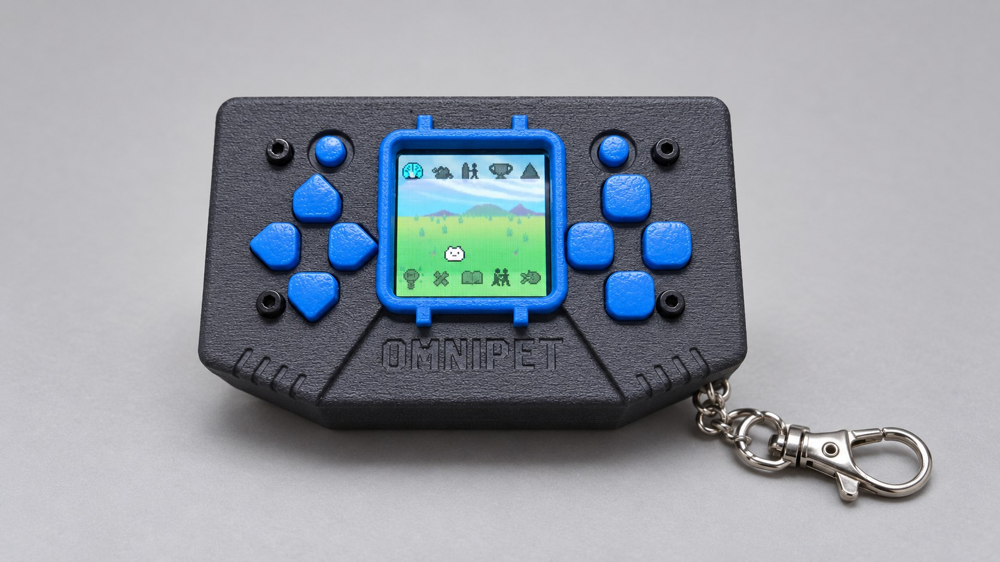
Parts and tools
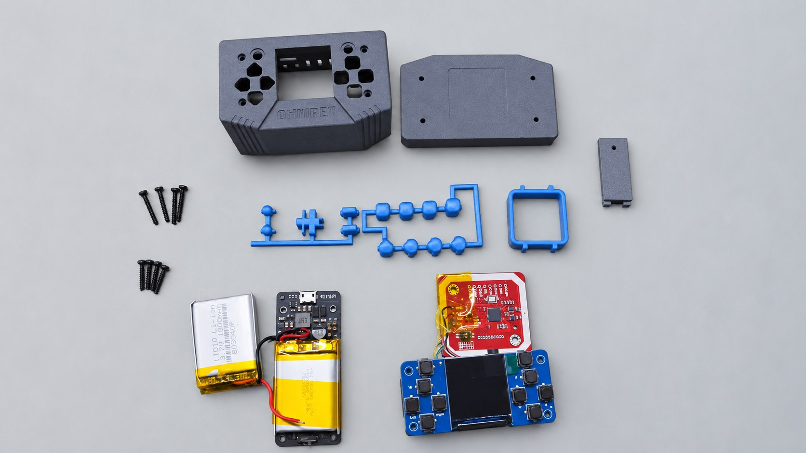
The required parts make a working handheld. The optional parts add the battery, shaking and card reading, and the printed case holds it all. The links are the parts used for this guide; any seller of the same part works, so look for the cheapest.
| Part | Need | What it does |
|---|---|---|
| Raspberry Pi Zero 2W | Required | Runs the game. |
| Waveshare GamePi13 | Required | The screen and the buttons. |
| microSD card | Required | Holds the system and the game. |
| UPS-Lite battery module | Optional | Runs the handheld on battery and shows the battery level. |
| Li-ion batteries | Optional | One or two, for the battery module. |
| BMI160 accelerometer | Optional | Shaking. |
| PN532 NFC reader | Optional | Reads physical cards and plates. |
| 3D printed case | Printed | The shells and the buttons, with room for two batteries. |
Raspberry Pi Zero 2W Required
Buy it with the GPIO header already soldered. Without it, you solder the 40 pins yourself (see Preparing the Pi).
Product page: raspberrypi.com · Used for this guide: AliExpress
Waveshare GamePi13 Required
The 1.3-inch screen and the buttons. It sits on top of the Pi, on the Pi's 40-pin header.
Some stores sell it as a kit with an acrylic case, a stand, spacers, screws and a prism. This build uses the kit's spacers, screws, stand and prism. The prism goes over the screen for a 3D look, and the game supports it: on the main screen, L turns the picture upside down. To get only the prism, look for a 25.4 mm glass prism (example).
Product page: waveshare.com · Used for this guide: AliExpress
microSD card Required
16 GB or larger, formatted to FAT32. Any brand works.
UPS-Lite battery module Optional
Without it, the handheld runs from the Pi's micro USB port. With it, the handheld runs on battery like a proper virtual pet, and the game shows the battery level.
The module comes in versions 1.2 and 1.3. Both are compatible.
Used for this guide: AliExpress
Li-ion batteries Optional
One or two 3.7 V 1000 mAh Li-ion batteries (803040) for the battery module. The module is sold with one; the case holds two, for 2000 mAh (see Second battery).
BMI160 accelerometer Optional
A 6-axis BMI160 board. It lets you shake the handheld in the minigames that use shaking, as in the Pendulum and Vital Bracelet modules. Without it, the Y button shakes instead (not as fun as the real thing).
The board works over SPI or I2C; this build uses I2C, with four thin wires soldered to the Pi (see Accelerometer).
Used for this guide: AliExpress
PN532 NFC reader Optional
Reads physical cards and plates made as NFC tags (Library > Collections > CARDS, READ). NFC support is new and not fully tested yet. Without it, the game's card packs and items do the same job.
It is set to I2C with its two switches and shares the accelerometer's connection: four more thin wires (see NFC reader). The cards are NTAG215 or NTAG216 tags, as cards or stickers; a card's data does not fit an NTAG213.
Used for this guide: AliExpress
3D printed case Printed
Omnipet's own case: a top shell, a back shell, a side door, a screen frame and the buttons. Print it yourself
or order it from a printing service. The STL files
are in Documentation/device_shell in the game folder:
| File | Part |
|---|---|
| TopShell.stl | Top shell |
| BackShell.stl | Back shell |
| SideDoor.stl | Side door |
| ScreenFrame.stl | Screen frame |
| Buttons_DPad_ABXY.stl | Buttons: direction pad, A, B, X and Y |
| Buttons_LR_StartSelect_Power.stl | Buttons: L, R, Start, Select and power |
Other parts
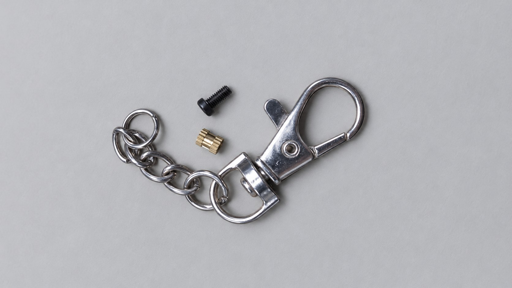
| Qty | Part | Notes |
|---|---|---|
| 4 | 9 mm spacers | Come with the GamePi13 kit. |
| 4 | 10 mm spacers with a male end | For the battery module. The male end screws into a 9 mm spacer and holds it from below. The ones that come with the battery module work. |
| 4 | 10.4 mm M3 screws | For the case: they fix the boards to the back shell from below. Come with the GamePi13 kit. |
| 4 | 11.6 mm M3 screws | For the case, bought separately. They fix the Pi stack to the top shell; you may need longer ones. |
| 1 | Side door screw and brass insert | The insert holds the screw that closes the side door. Fix it in the shell with superglue, or melt it in with a soldering iron. |
| 1 | Small piece, 3 mm or less | For the case's shaker (see Assembly). Metal is recommended; a screw head works well. |
| 1 | Keychain | Optional. |
| - | Thin wires | For the accelerometer and the NFC reader. |
| - | Superglue | For the assembly. |
| - | Kapton tape | Optional, to insulate the wiring. |
| - | NTAG215 or NTAG216 tags | For the NFC reader, one per card. |
The case screws in the photos are not ideal: flat-head Phillips screws suit the case better.
Tools
- A soldering iron and solder, for the accelerometer and NFC reader wires, the Pi's header if it came without one, and the side door's insert if you do not glue it.
- A small Phillips screwdriver, and a hex key for the side door screw.
- A 3D printer or a printing service, for the case.
- A computer with a microSD card reader, to write the card.
Preparing the SD card
The Omnipet SD card image has the system and the game installed. You write it to the card with Raspberry Pi Imager on your computer.
- Download the latest
Omnipet_GamePi_Ver_X.X (Image).zipfrom the Omnipet Mega folder and unzip it to get the.imgfile. - Install and open Raspberry Pi Imager and
choose:
- Raspberry Pi Device: Raspberry Pi Zero 2 W.
- Operating System: Use Custom, at the bottom of the list, then the
.imgfile. - Storage: your SD card.
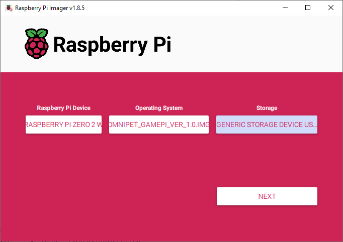
- Imager asks whether to use OS customisation. Click EDIT SETTINGS.
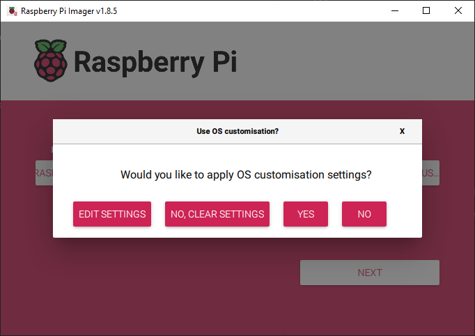
- On the GENERAL tab, fill in:
- Set hostname: a name for the handheld, such as
omnipet. Your computer then finds it atomnipet.local. - Set username and password: any you like. You need them to reach the handheld from your computer.
- Configure wireless LAN: your WiFi network's name (SSID) and password, and your country.
- Set locale settings: your time zone and keyboard layout.
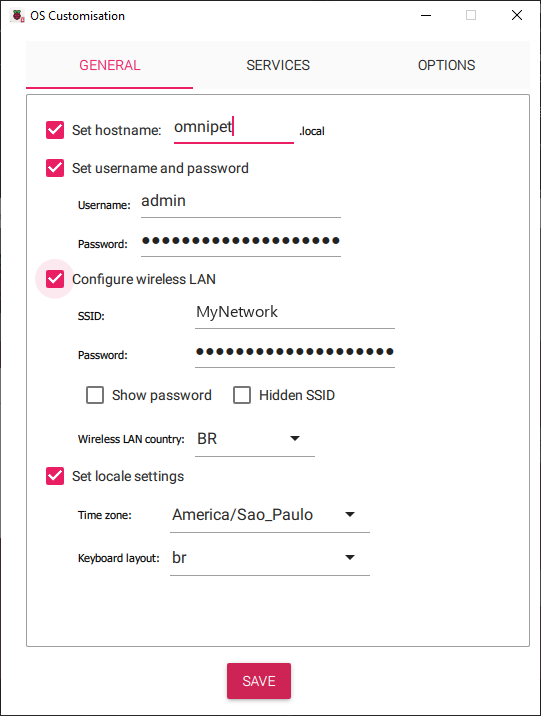
- Set hostname: a name for the handheld, such as
- Click YES to apply the settings, then YES again to confirm, because writing erases everything on the card. Imager writes the card and then checks it.
Preparing the Pi
Skip this if your Pi came with its GPIO header already soldered. Otherwise, solder the 40-pin header yourself: put it in from the top of the Pi (the side with the chips), with the long pins pointing up, and solder every pin on the underside. Each joint should be a small shiny cone that touches no other pin.
Optional parts
Installing the optional parts: the accelerometer, the NFC reader and the second battery. Skip the ones you do not use.
Wiring
The accelerometer and the NFC reader both use the Pi's I2C connection, so they connect to the same four pins. Solder thin wires from each board to these pins, on the underside of the Pi:
| Pi pin | Signal | Accelerometer | NFC reader |
|---|---|---|---|
| 1 | 3.3V | 3V3 | VCC |
| 3 | SDA | SDA | SDA |
| 5 | SCL | SCL | SCL |
| 9 | GND | GND | GND |
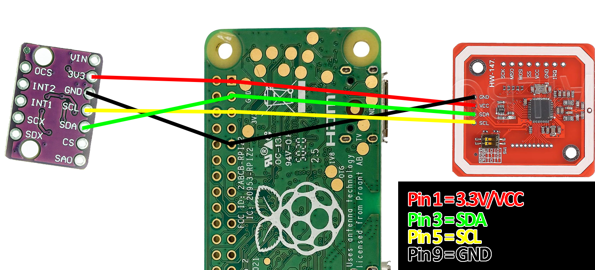
The diagram shows the Pi from below. Pin 1 is the one with the square pad.
Accelerometer
The accelerometer only needs short wires. Fix it under the Pi with Kapton tape both under and over it: the tape insulates it from the Pi, protects it and holds it in place. Put it in the same place and orientation as in the photo: at the pin 1 end of the header, chip side out, with its 3V3, GND, SCL and SDA pins towards the header. In any other orientation the game cannot read the shaking correctly.
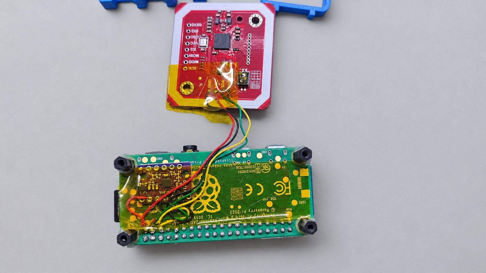
NFC reader
The NFC reader needs longer wires than the accelerometer, because it sits at the bottom of the case (the photo above shows them). Kapton tape over its solder joints keeps them from touching anything.
Before fitting it, set its two switches to I2C: switch 1 on, switch 2 off. The table printed beside the switches gives every mode:
| Mode | Switch 1 | Switch 2 |
|---|---|---|
| HSU | Off | Off |
| I2C (this build) | On | Off |
| SPI | Off | On |
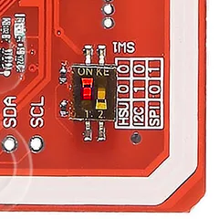
Second battery
Solder the second battery to the underside of the battery module, on the pads that match the first battery's on the top side: red to red, black to black. If your module came with a battery already soldered, its wires show you which pad is which.
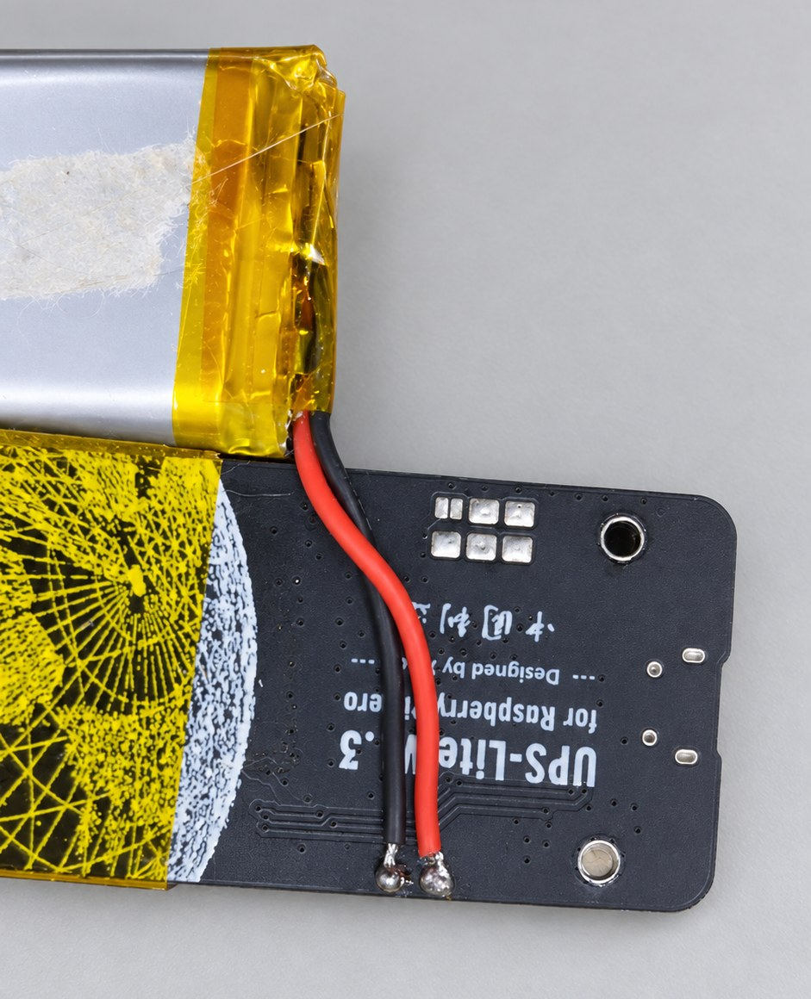
Assembly
- Join the GamePi13 to the Pi. Line up the GamePi13's socket with the Pi's pins, with every pin going into the socket, and press the boards together. With the pins aligned, they fit together nicely.
- Put the four 9 mm spacers from the GamePi13 kit between the boards, at the corners. Hold each one in place
from below with a 10 mm spacer (the black ones in the photo): screw its male end into the 9 mm spacer through
the Pi's mounting hole.
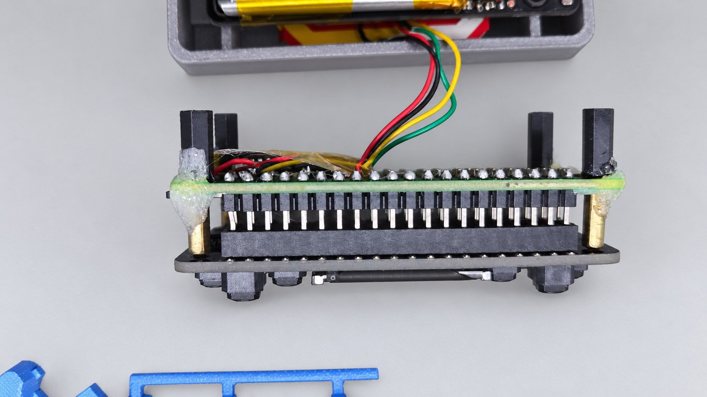
- Lock every spacer in place. This step is very important: if the spacers work loose, the case
can get stuck. Glue each corner where the 9 mm spacer, the Pi and the male spacer meet. This guide used
superglue and silicone glue; use whatever you have, as long as the spacers end up firmly fixed.
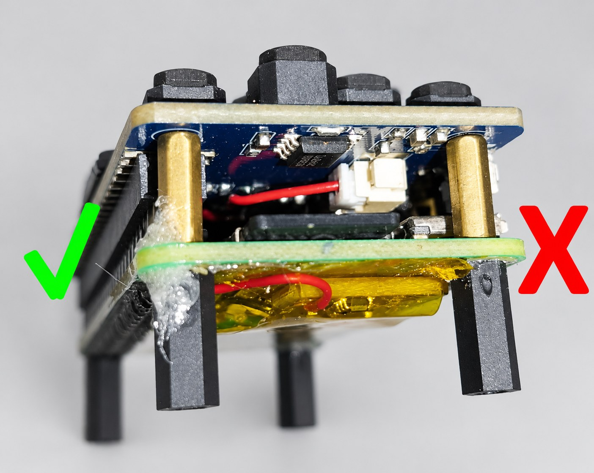
- Take the back shell and lay the NFC reader in the space at its bottom. Check first that its switches are set
to I2C (see NFC reader).
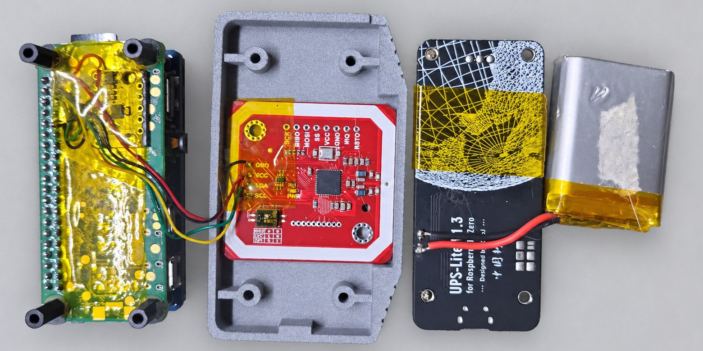
- Put the battery module, with the second battery, on top of the NFC reader. The second battery fits at the
front of the case, along the edge under the Down and B buttons, with its cable running between the battery
module and the NFC reader.
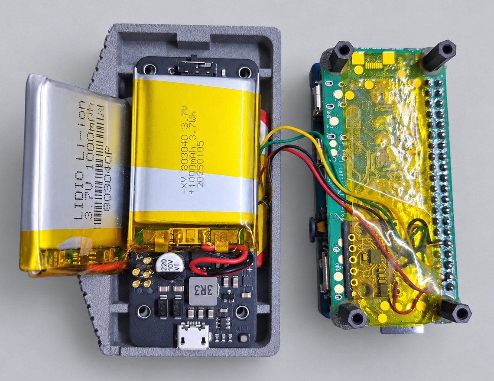
The photos below show the second battery in place, with the Pi stack set on top.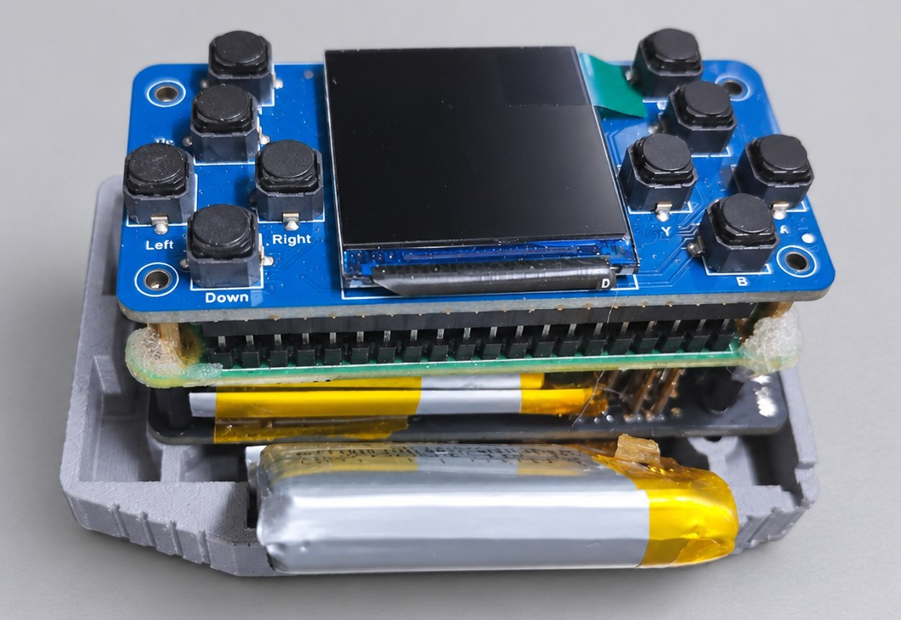
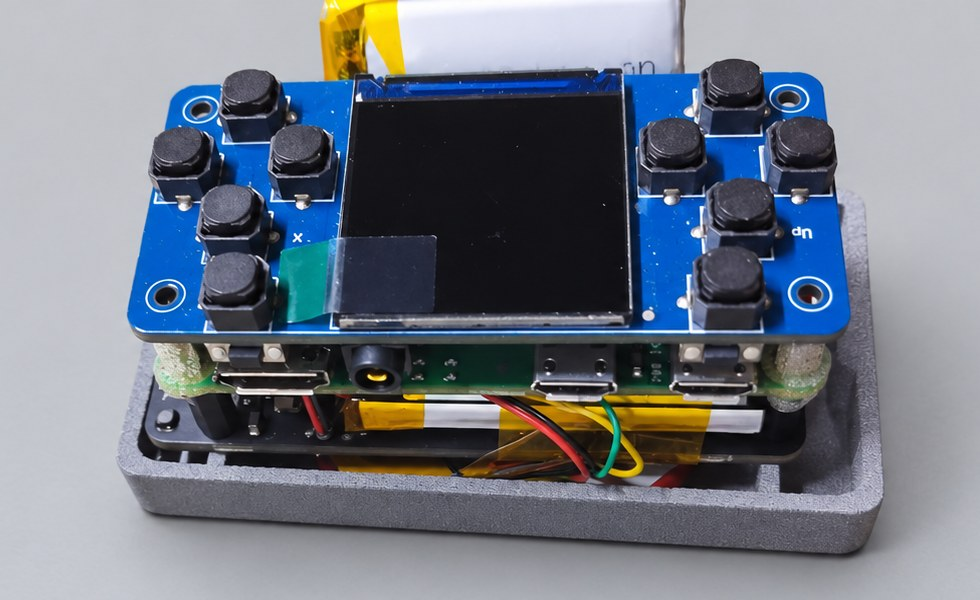
- Put the Pi stack on top of the battery module, with the screw holes lined up. This also lines up the battery module's pins with the Pi.
- With all the boards in place, fit the four shorter M3 screws (10.4 mm) from below, through the back shell. Do not force them: once they hold, they are tight enough.
- Insert the SD card and turn the handheld on with the battery module's power button. Everything should work, including the NFC reader and the accelerometer. To check that the accelerometer reads the right axis, train in Free Mode with a shaking minigame such as Count Match (Color) (see the Manual).
- Now the top shell. Fit the side door's brass insert in its hole: melt it in with a soldering iron, or fix it
with superglue as in the photo.
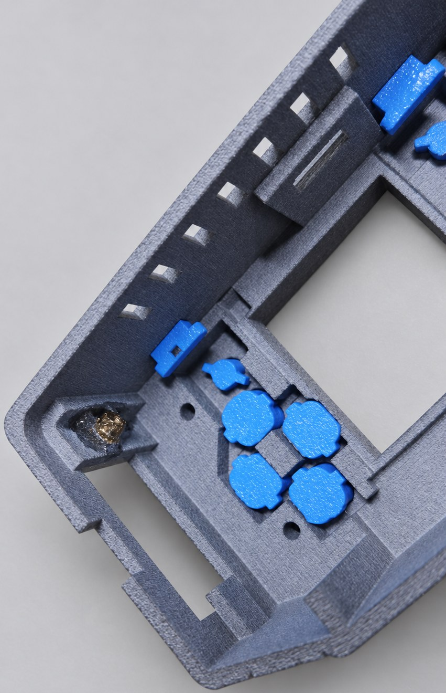
- Make the shaker. Inside the top shell, near the screen opening, there is a very small hole
(circled in red). Put a tiny piece of metal or plastic in it: it moves and makes a noise when you shake the
handheld. Do not expect a loud noise; a screw head gave good results.
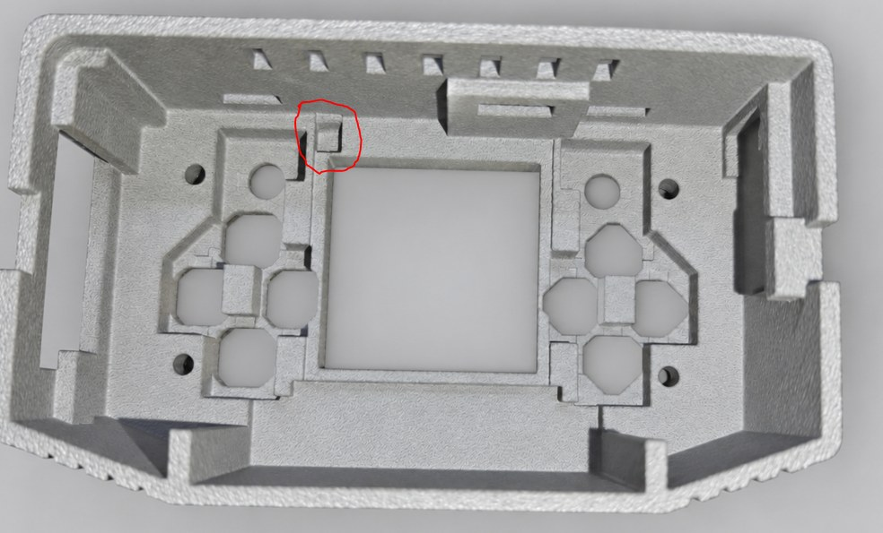
- Detach the buttons from the sprues: four direction buttons, four square buttons for A, B, X and Y, two round ones for Start and Select, two rectangular ones for L and R, and the power button.
- Put the buttons, except the power button, in their holes in the top shell, from the inside. Every button
except L and R has two small tabs that hold it in place. On the Down and B buttons the tabs form an L instead
of facing each other; small notches in the case show where they go.
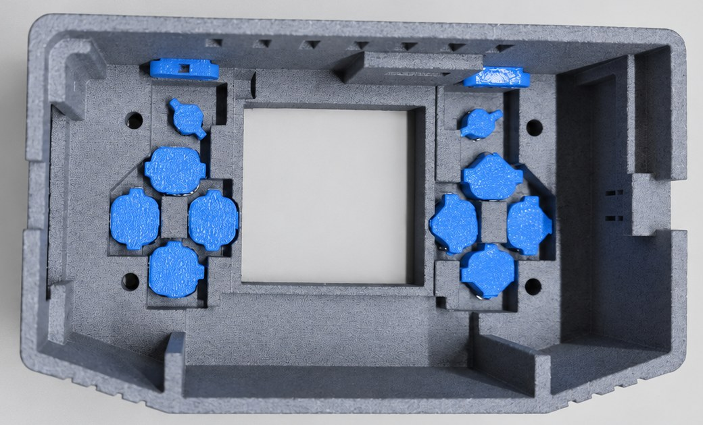
- With the buttons and the shaker in place, join the board assembly to the top shell. This is a little
finicky: be patient and do not force the parts, they fit nicely together. Put the power button in place,
lined up with the battery module's power switch. If you use the keychain, put it in place now too.
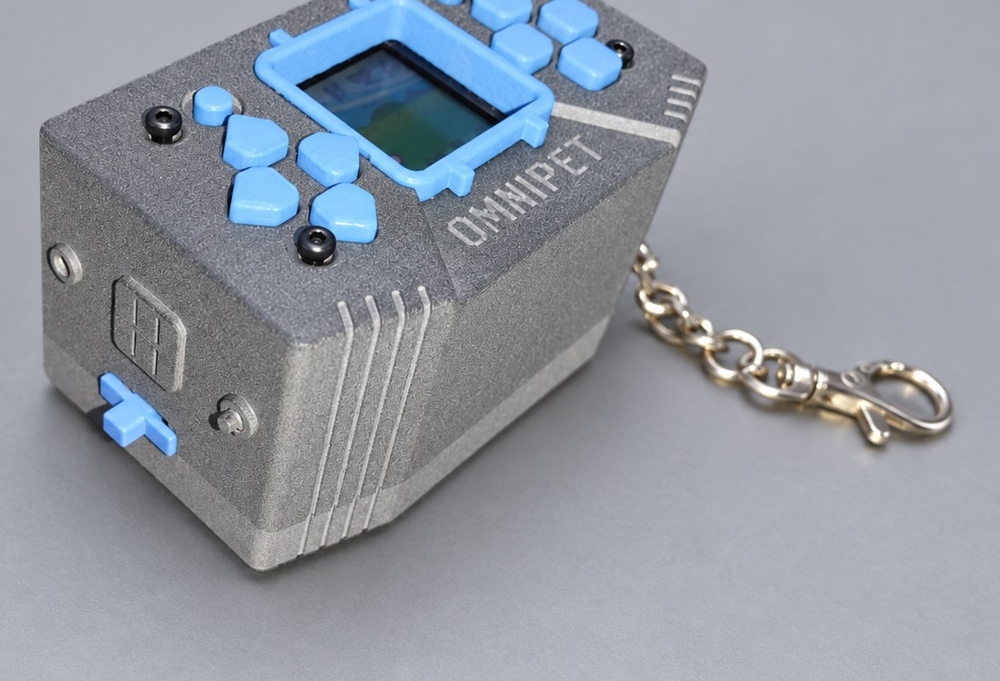
- Before fitting the front screws, check that you can feel every button pressing its GamePi13 button. Then fit the four longer M3 screws (11.6 mm) from the top. If no spacer came loose, they all fit.
- Finally, press the screen frame into place. It holds without glue.
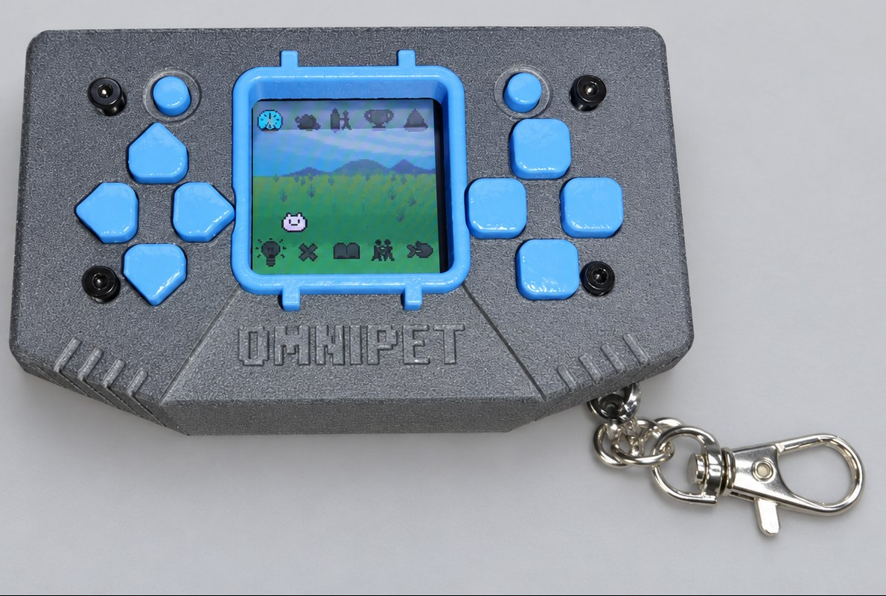
- Close it off with the side door: put the door in place and fix it with its screw, which goes into the brass insert from step 9.
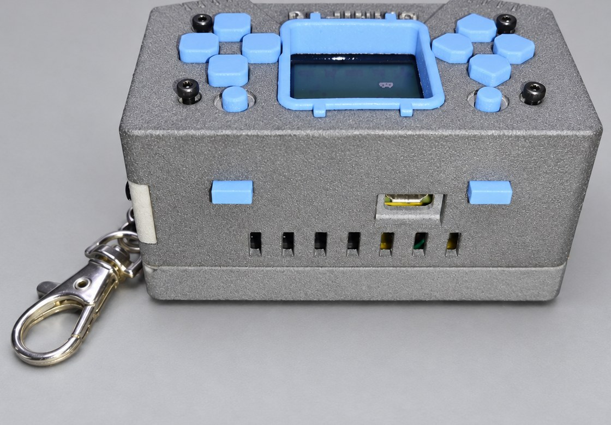
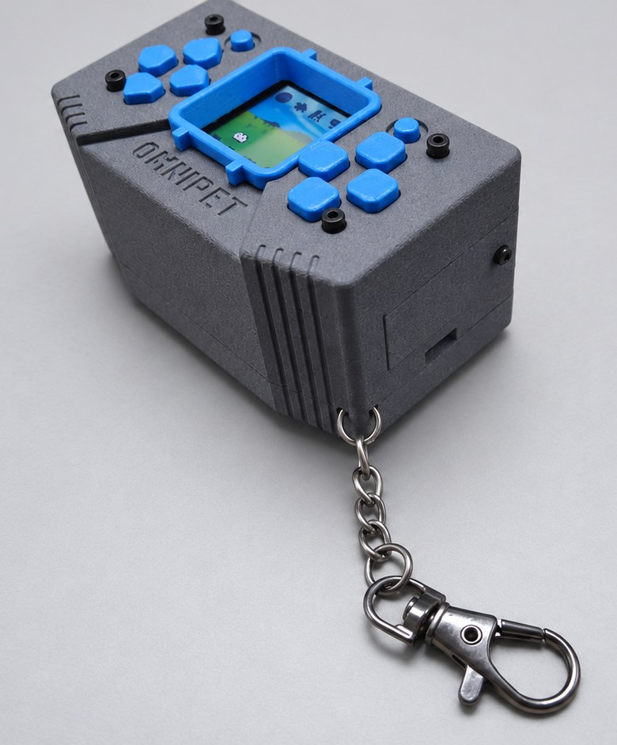
Software
The SD card image from Preparing the SD card already has the game. To install it from the
zip instead, follow the Installation page's GamePi section
(setup.sh --service). Turn on I2C in
raspi-config for the battery, accelerometer and NFC reader.